3340A12 A'B.S. system. - electronic and hydraulic CONTROL UNIT R.R.
- Path
- Procedures > 33 BRAKING SYSTEM > 3340 A(B.S. ANTI-LOCK BRAKING SYSTEM .) > 3340A abs check/adjustment devices > 3340A12 A'B.S. system. - electronic and hydraulic CONTROL UNIT R.R.
- Kind
- repair procedure (removal / refitting; the operation number is the code)
- Applies to
- all engines; all production periods
- Interactive page
- https://sloeber94.github.io/elrnDB-a156/en/#/3238091
Applies to: all engines; all production periods
 Removing
Removing
 Refitting
Refitting1. Drain the brake-clutch fluid from the reservoir using a suitable syringe.
2. Disconnect the air inlet pipe from the inlet manifold.
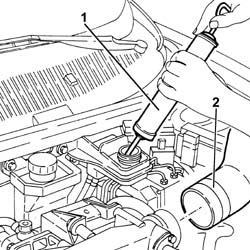
Applies to: all engines; all production periods
1. Remove the engine bulkhead seal.
2. Undo the fastenings and move the relay holder bracket away without disconnecting the electrical connections.
3. Undo the bolts (3a) and move the brake-clutch fluid reservoir away.
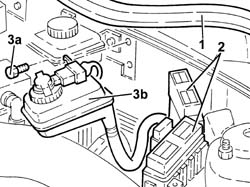
Applies to: all engines; all production periods
1. Disconnect the comb from the A.B.S. hydraulic and electronic control unit.
2. Disconnect the hose fittings from the A.B.S. hydraulic and electronic control unit.
3. Undo the nuts (3a) and remove the A.B.S. hydraulic and electronic control unit (3b).
 | Name | Connector |
|---|---|---|
3b | ABS control unit |
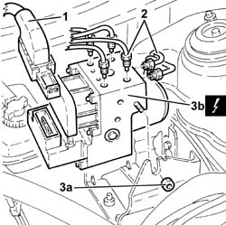
Applies to: all engines; all production periods
Refitting
RemovingPlace the ABS hydraulic and electronic unit back in its housing and secure it with the nuts.
| Name | Connector |
|---|---|---|
- | ABS control unit |
Connect the connectors for the A.B.S. pipes to the hydraulic and electronic control unit to torque.
 | Fastening | Component | Ø | Value (daNm) |
|---|---|---|---|---|
- | Connector | PIPE FROM CONTROL UNIT TO FRONT BRAKES | M10 | 1.3 - 1.5 |
Connect the comb to the A.B.S. hydraulic and electronic control unit.
Place the brake-clutch fluid reservoir back in its housing and secure it using the bolts.
Place the relay holder bracket, complete with electrical wiring, back in its housing and fasten it.
Place the engine bulkhead seal back in its seating.
Connect the air inlet pipe to the inlet manifold.
3330A10 BRAKE FLUID - Check level and top up, if necessary.
Applies to: all engines; production: da 03/02 a 09/03, da 10/03
Removing
RefittingProceed with removal 5530B10 battery - r+r .
Proceed with removal 5530B52 Battery DRIP TRAY/SUPPORT - R.R. .
1. Remove the protective cap on the brake caliper bleed valve.
2. Connect the collection system (pipe and reservoir) to the bleed valve on the brake caliper and loosen it.
Operate the brake pedal until the brake-clutch fluid reservoir is empty.
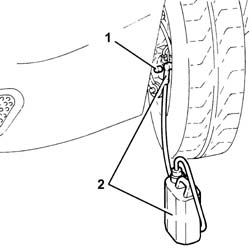
Applies to: all engines; production: da 03/02 a 09/03, da 10/03
1. Undo the nuts (1a) and raise the brake-clutch fluid reservoir (1b) as much as necessary.
2. Loosen the band and disconnect the flexible pipe from the brake-clutch reservoir to the master cylinder, reservoir side.
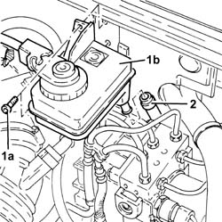
Applies to: all engines; production: da 03/02 a 09/03, da 10/03; only with equipment: VDC
1. Disconnect the electrical connection for the VDC system pressure sensor.
| Name | Connector |
|---|---|---|
1 | Pressure sensor (VDC) |
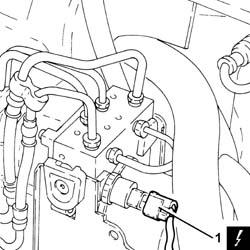
Applies to: all engines; production: da 03/02 a 09/03, da 10/03
1. Disconnect the electrical connection from the A.B.S. hydraulic and electronic control unit.
| Name | Connector |
|---|---|---|
1 | ABS control unit |
2. Undo the connectors (2a) and (2b), then remove the pipes from the master cylinder to the A.B.S. hydraulic control unit (2c).
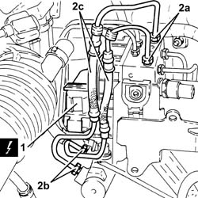
Applies to: all engines; production: da 03/02 a 09/03, da 10/03
1. Undo the connectors (1a) and disconnect the rigid pipes from the A.B.S. hydraulic control unit to the brakes (1b), control unit side.
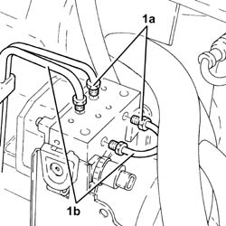
Applies to: all engines; production: da 03/02 a 09/03, da 10/03
1. Undo the nuts (1a) and the bolt (1b) fastening the A.B.S. control unit mounting.
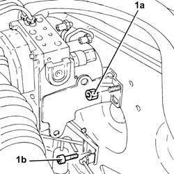
Applies to: all engines; production: da 03/02 a 09/03, da 10/03
Release the pipes from the retaining bands on the A.B.S. control unit mounting.
1. Remove the A.B.S. hydraulic and electronic control unit (1a) complete with mounting (1b).
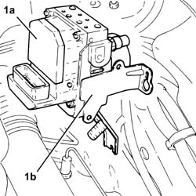
Applies to: all engines; production: da 03/02 a 09/03, da 10/03
1. At the bench, remove the clips (1a) and separate the hydraulic and electronic control unit for the A.B.S. (1b) from the mounting (1c).
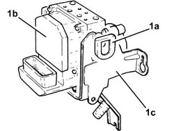
Applies to: all engines; production: da 03/02 a 09/03, da 10/03
Refitting
Removing-
Fit the A.B.S. hydraulic and electronic control unit to the mounting and secure it using the clips.
Place the A.B.S. hydraulic and electronic control unit complete with mounting back in its housing.
Tighten the nuts and the bolts securing the A.B.S. control unit mounting.
Fasten the pipes to the retaining bands on the A.B.S. control unit mounting.
1. Connect the rigid pipes from the A.B.S. hydraulic control unit to the brakes (1a), control unit side and tighten the connectors (1b) to the recommended torque.
| Fastening | Component | Ø | Value (daNm) |
|---|---|---|---|---|
1b | Connector | RIGID CENTRE BRAKE PIPES../ | M10/M12 | (A.B.S.) control unit side 1.3 ÷ 1.5 |
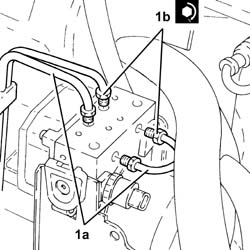
Applies to: all engines; production: da 03/02 a 09/03, da 10/03
1. Place the pipes from the master cylinder to the A.B.S. hydraulic control unit (1a) back in their housings and tighten the connectors (1b) and (1c) to the recommended torque.
| Fastening | Component | Ø | Value (daNm) |
|---|---|---|---|---|
1b | Connector | PIPE FROM PUMP TO HYDRAULIC CONTROL UNIT | M10/M12 | (A.B.S.) control unit side 1.3 ÷ 1.5 |
| Fastening | Component | Ø | Value (daNm) |
|---|---|---|---|---|
1c | Connector | PIPE FROM PUMP TO HYDRAULIC CONTROL UNIT | M10/M12 | (Master cylinder side) 1.3 ÷ 1.5 |
2. Connect the electrical connection to the A.B.S. hydraulic and electronic control unit.
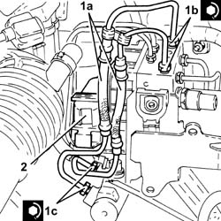
Applies to: all engines; production: da 03/02 a 09/03, da 10/03; only with equipment: VDC
Connect the electrical connection to the VDC system pressure sensor.
Applies to: all engines; production: da 03/02 a 09/03, da 10/03
Connect the flexible pipe from the brake-clutch fluid reservoir to the master cylinder, reservoir side and tighten the band.
Place the brake-clutch fluid reservoir back in its housing and secure it using the bolts.
Proceed with refitting 5530B52 Battery DRIP TRAY/SUPPORT - R.R. .
Proceed with refitting 5530B10 battery - r+r .
Top up the brake-clutch fluid level 3330A14 HYDRAULIC BRAKING SYSTEM - Bleed air .
Topics linked from this page (6)
- 3330A10 BRAKE FLUID - Check level and top up, if necessary.
- 3330A14 HYDRAULIC BRAKING SYSTEM - Bleed air
- 5530B10 battery - r+r
- 5530B52 Battery DRIP TRAY/SUPPORT - R.R.
- K72 Pressure sensor (VDC)
- M50 ABS control unit ( ABS )
Topics that link to this page (13)
- F12 BRAKE PEDAL HARD
- F20 ABS WORKING IRREGULARLY
- F21 ABS NOT WORKING / (ONE WHEEL LOCKED)
- H02 DRIFT WHILST BRAKING
- K03 SPEEDOMETER NOT WORKING
- 3330D02 brake servo/brake pump assembly - r r
- 3330D10 brake servo - r+r - includes separation from master cylinder (pump)
- 3340A13 abs central mount - r r
- 3340A20 abs electronic control unit - r+r
- 3340B55 central brake pipe to lh - r r
- 3340B56 RIGID PIPE from hydraulic CONTROL UNIT to RIGHT FRONT BRAKE - R.R.
- 3340B62 rear connection central pipe - r r
- 5505A26 bonnet wiring - r r